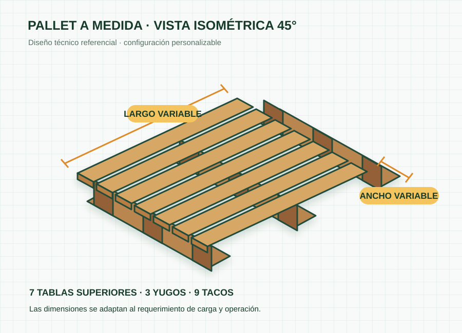

Diseñado para tu operación
Cuando un formato estándar no responde al producto o proceso, evaluamos una solución según las medidas y condiciones de uso indicadas por el cliente.
Información necesaria
- Largo y ancho requeridos.
- Peso y características de la carga.
- Cantidad solicitada.
- Uso estático o en movimiento.
- Acceso por dos o cuatro lados.
- Uso nacional o exportación.
La propuesta inicial estará sujeta a validación técnica antes de fabricación.